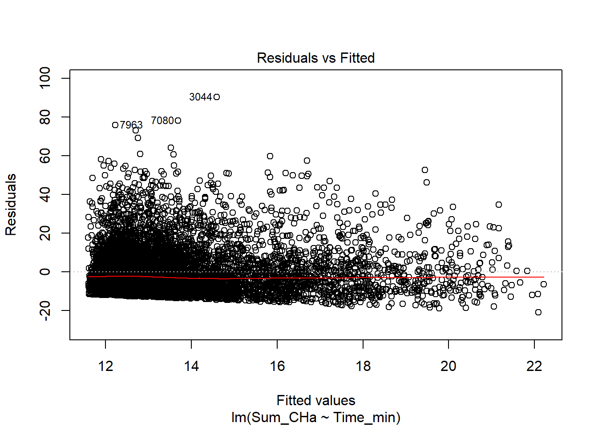
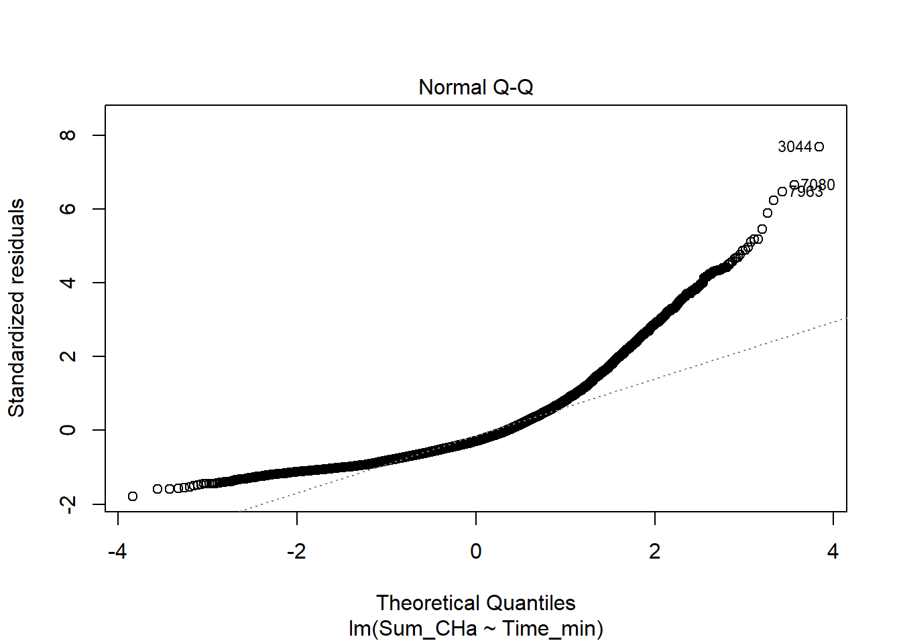

Carbon storage and Travel time to nearest city
Accessibility to Cities 2015 This global accessibility map enumerates land-based travel time to the nearest densely-populated area for all areas between 85 degrees north and 60 degrees south for a nominal year 2015.
Densely-populated areas are defined as contiguous areas with 1,500 or more inhabitants per square kilometer or a majority of built-up land cover types coincident with a population centre of at least 50,000 inhabitants.
This map was produced through a collaboration between the University of Oxford Malaria Atlas Project (MAP), Google, the European Union Joint Research Centre (JRC), and the University of Twente, Netherlands. The underlying datasets used to produce the map include roads (comprising the first ever global-scale use of Open Street Map and Google roads datasets), railways, rivers, lakes, oceans, topographic conditions (slope and elevation), landcover types, and national borders.
These datasets were each allocated a speed or speeds of travel in terms of time to cross each pixel of that type. The datasets were then combined to produce a “friction surface”, a map where every pixel is allocated a nominal overall speed of travel based on the types occurring within that pixel. Least-cost-path algorithms (running in Google Earth Engine and, for high-latitude areas, in R) were used in conjunction with this friction surface to calculate the time of travel from all locations to the nearest city (by travel time). Cities were determined using the high-density-cover product created by the Global Human Settlement Project.
Each pixel in the resultant accessibility map thus represents the modeled shortest time from that location to a city.
library(raster)## Loading required package: splibrary("sp")
library("sf")## Linking to GEOS 3.6.1, GDAL 2.2.3, PROJ 4.9.3library("rgdal")## rgdal: version: 1.4-4, (SVN revision 833)
## Geospatial Data Abstraction Library extensions to R successfully loaded
## Loaded GDAL runtime: GDAL 2.2.3, released 2017/11/20
## Path to GDAL shared files: C:/Users/kyaws/Documents/R/win-library/3.6/rgdal/gdal
## GDAL binary built with GEOS: TRUE
## Loaded PROJ.4 runtime: Rel. 4.9.3, 15 August 2016, [PJ_VERSION: 493]
## Path to PROJ.4 shared files: C:/Users/kyaws/Documents/R/win-library/3.6/rgdal/proj
## Linking to sp version: 1.3-1library(ggplot2)
library(tidyverse)## -- Attaching packages ---------------------------------------------------------------------------------------------------------------- tidyverse 1.2.1 --## v tibble 2.1.3 v purrr 0.3.2
## v tidyr 0.8.3 v dplyr 0.8.3
## v readr 1.3.1 v stringr 1.4.0
## v tibble 2.1.3 v forcats 0.4.0## -- Conflicts ------------------------------------------------------------------------------------------------------------------- tidyverse_conflicts() --
## x tidyr::extract() masks raster::extract()
## x dplyr::filter() masks stats::filter()
## x dplyr::lag() masks stats::lag()
## x dplyr::select() masks raster::select()C_Cities <- read.csv("Data/distance_to_cities.csv")
C_Cities <- C_Cities %>% rename(Time_min=mean)
ggplot(data=C_Cities, aes(x=Time_min, y = New_Carbon, color=District))+ geom_point()+
labs(title = "Carbon storage and Travel time to nearest city",
x= "Travel Time (min)",
y= "MaxCarbon(t/ha)")+
theme(axis.text.x = element_text(size=7, angle = 45, vjust = 0.5),
axis.text.y = element_text(size = 7))
ggplot(data = C_Cities, mapping=aes(x=Time_min,y=New_Carbon, color=District))+geom_point()+
facet_wrap(facets = vars(District), scales = "free")+
labs(title = "Carbon storage and Travel time to nearest city",
x= "Travel Time (min)",
y= "MaxCarbon(t/ha)")+
theme(axis.text.x = element_text(size=7, angle = 45, vjust = 0.5),
axis.text.y = element_text(size = 7))